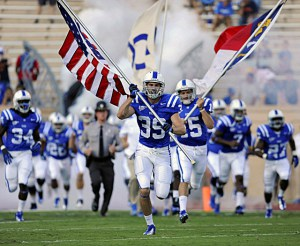

THE GREATNESS OF COLLEGE FOOTBALL – Why college football is great
August 11,2016
By: Tommy

The greatest spectator sport is college football. It’s true that the European/Central American soccer leagues boast some of the most die-hard fan bases with some great rivalries, and the NFL is king of revenue and average viewership, college football has the ability to offer a connection to its fans that no professional league can offer.
Many fans of college football attended the school they cheer for. This means they probably encounters some of the players on the team and may have even had classes, studied with or were friends with the athletes. This also means that the fans have a personal investment of several years of their life spent and a significant financial investment in the school the program represents. The memories are stronger because the level of investment was higher. This is also why the top programs have a higher average attendance than any top team from any other sport in the world. 9 of the top 10 largest stadiums in the world are college football stadiums. Compare a game with 43,000 fans at Bundesliga match or 72,000 at an SEC football game. And these fans are cheering for players that will no longer be on the team in 5 years at most.
While many professional teams can use their big name players for year after year, all college players have an eligibility cap which means that in 6 years’ time, there will be no one playing that is playing today. Compare that to Lionel Messi being with Barcelona for 13 years or Michael Jordan being with the Bulls for 12 years. But this cap is a plus because it focuses the investment in the program and not a player so that there are no hard feelings when a player leaves. This eligibility limit also allows players to make a name for themselves in a very short period of time because there are no veteran superstars like Lebron James or Lionel Messi or Tom Brady that they have to play beside/against for another 5 years before they can establish their own dominance. Every player just has to wait 1-2 years before the best and brightest stars are gone and the fans are looking for the next great thing. The turnover makes it hard for a team to establish dominance over long periods of time, and the rules around recruiting are a hotly debated topic, but the college system is always fresh with new faces and stars to watch. And teams can reinvent themselves in a very short time and still be competitive. The lack of a draft also eliminates the encouragement to lower teams to sandbag for the better selection of new talent.
The most viewed sports in the world are American football, association football (a.k.a. soccer), basketball, baseball and cricket. The top leagues in each sport have carefully set up their format so that there is an undisputed champion each season. Different leagues use different methods of determination. Whether this includes every team plays every team at least twice (home and away) as is the case in the EPL, the Bundesliga, and the IPL, or a playoff where every top team from each division and possibly a few more get represented as is the case in the NBA, the NFL, and in MLB, or they may even take it a step further and just play so many games that no one can really argue who deserved to be champion that year like in MLB. The only league in any sport that seems to differ from this would be NCAA Div 1 FBS football.
You have the short season of just 12-13 games to watch your team, then see a team that has replaced its oldest 25% of its players with a new crop the next year. Compare that to the 16 games NFL season, the 38 EPL matches, the 82 game NBA season or the ungodly 162 MLB games. FBS teams play a maximum of 16 games and that is only if the play Hawaii and in the national championship game, most only play their 12-13 game season and maybe a bowl game for their postseason. So college football has a fleeting feeling to it. There are a multitude of players who only participate briefly in a few short seasons and then they make way for the new kids. I use the term kids because the vast majority of players are between 18-24 years’ old which help remind fans of the time when they were younger and in college and again ties back to their memories. This fleeting feeling helps to connect everything back to the program, which each fan has their own unique, personal connection. That is why the stadiums are bigger and the average attendance is higher; there is less of an opportunity to see a game and the emotions surrounding the game are strong and personal.